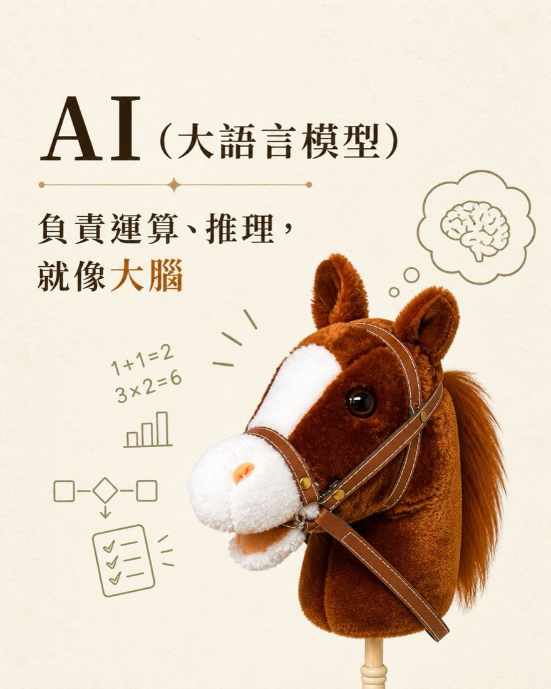
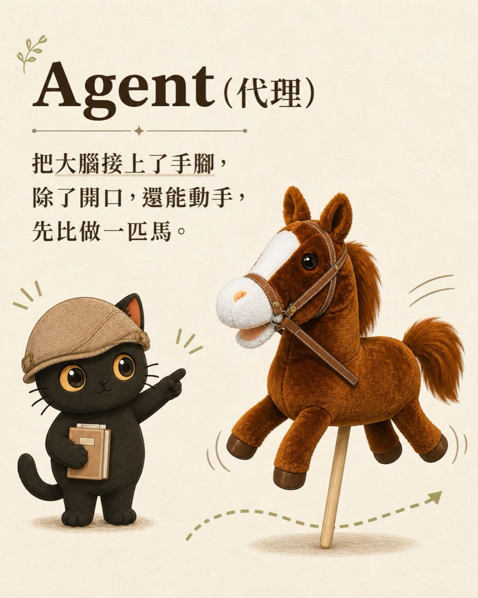
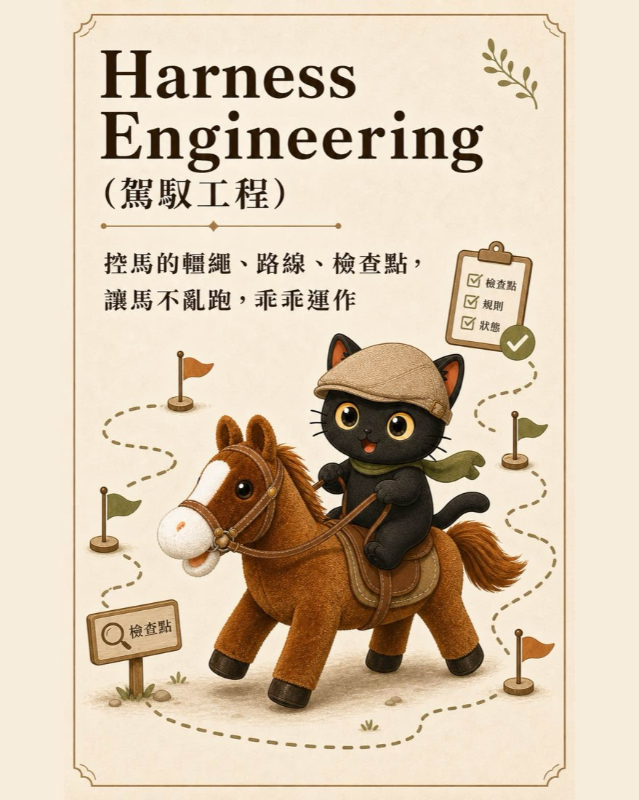
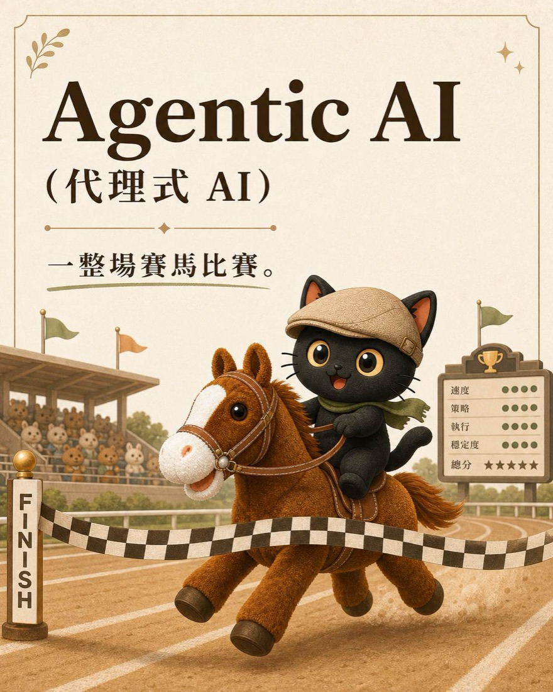
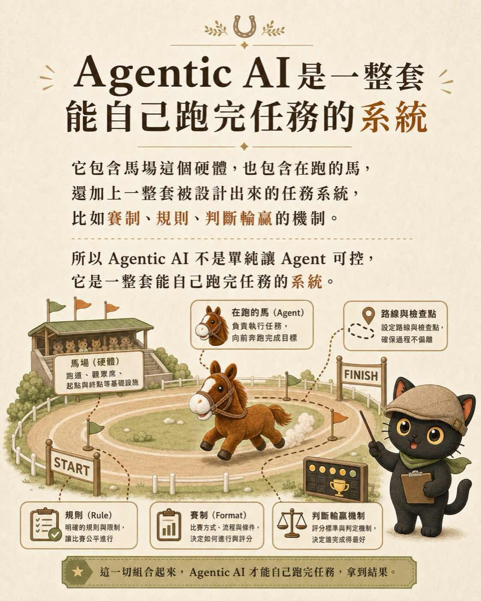
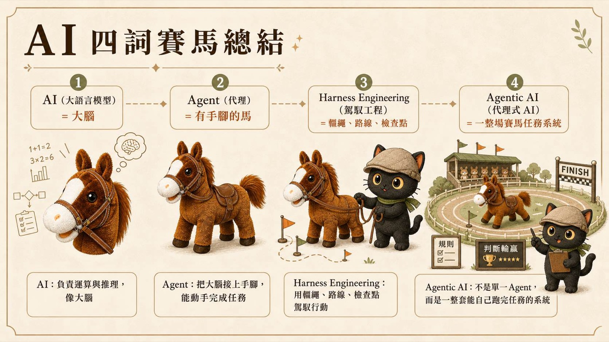

2024 年教提示詞很熱門，現在大家都不太講提示詞了。原因有兩個：單句提示詞本身意義不大，重點已經移到「駕馭工程」；而且 AI 變得非常聰明，聰明到你寫死的指令反而把它的能力綁住。這篇講「意圖優先」這個心法，怎麼把你的目標跟底線講清楚，剩下讓更聰明的 AI 去想更好的做法，並附上三組可以直接複製使用的提示詞。
· 學過提示詞、會寫很長的指令，卻覺得 AI 還是只照你寫的做、沒有更好表現的人
· 想讓 AI 幫忙處理工作流程，又怕它擅自亂改、破壞你原本做法的人
· 想知道「上下文工程」「駕馭工程」這些新詞到底差在哪的人
· 理解提示詞工程、上下文工程、駕馭工程、迴圈工程這四個階段的差別
· 知道為什麼在 AI 變聰明之後，寫死的指令反而是浪費
· 拿走三組可複製的「意圖優先」提示詞：給目標開放探索、收尾複述確認、比對不破壞流程
- 別再寫死指令：把你要什麼講清楚，剩下交給 AI（你正在讀）
- 給老闆的駕馭思維：把不敢對員工說的，講給 AI 聽
為什麼現在沒人在講提示詞了
2024 年左右，教提示詞很熱門。那時候滿街都是「十個讓 AI 聽話的咒語」「提示詞模板大全」。現在你會發現，大家都沒在講提示詞了。
第一個原因，單句提示詞其實沒什麼意義。你想靠一句寫得很漂亮的指令就讓 AI 做出好東西，這件事的天花板很低。重點早就從「怎麼寫一句話」往上移了。
這裡有一條演進的路線：
單句指令怎麼下
經營整個對話脈絡
給意圖，帶它跑
設計會自跑的循環
這篇站在第三站：駕馭工程。它的入門心法就是「意圖優先」。至於再往後、把整條工作流設計成一個會自己跑的循環，那是第四站迴圈工程的事，可以接著看 什麼是迴圈工程 跟 我把三個工作流設計成 Loop。
AI 已經比你的流程聰明了
講第二個原因之前，先看一個對比。
2024 年的時候，AI 的智商大概只有 60 分。那時候的工作方式是這樣：我想得到的流程是 100 分，我把這個 100 分的流程寫出來、寫得很詳細，讓它照著做，它大概能做到 80 到 100 分。所以那時候，把流程寫死、寫清楚，是對的，因為 AI 自己想不到那麼好，你得用你的 100 分去拉它。
現在不一樣了。現在的 AI 非常聰明。我只能想到 100 分，但它說不定自己能想到 200 分、300 分。網路上的大神，已經有 500 分、1000 分的做法了。
問題就來了：
你寫死的那套詳細流程，在 2024 年是在幫 AI，在現在反而是在綁住它。你用 100 分的框架，把一個能跑到 300 分的東西，限制在 100 分。
這就是為什麼重點從「怎麼把指令寫得更完整」，變成「怎麼把意圖講清楚、然後放手」。
先搞懂四個名詞：一場賽馬說清楚
「駕馭工程」這個詞，常常跟 AI、Agent、Agentic AI 混在一起出現。往下講意圖優先之前，先用一場賽馬，一口氣說清楚這四個詞。（前面那條四階段，講的是「方法怎麼演進」；這裡四個名詞，講的是「這些東西各是什麼」，兩條軸不一樣。）






意圖優先：給方向，不給枷鎖
意圖優先的意思是，你下指令的時候，先講清楚最重要的那件事：你為什麼要做這件事、你要做到什麼程度。這是意圖跟目標。把這個講清楚之後，具體用什麼方法，留給更聰明的 AI 去想。
實際操作有三個動作。
給它你的步驟跟目標，但開放它去找更好的做法。
要它把理解跟打算採用的方法複述一遍，跟你報告。
要它先比對既有流程，可以改進，不能破壞。
動作一：給它你的步驟跟目標，但開放它去找更好的
你還是可以給它你原本的操作步驟，這是你的起點。重點是後面加一句，允許它去找更好的做法，只要不違背你的初衷跟理念。
核心原則
把你的做法當成「參考起點」，不是「不可更動的規定」。明確告訴它：你可以上網查、可以找別人更好的方法、可以超越我這套，前提是不違背我真正要的東西。
可複用提示詞
順便交代一句很好用的：遇到卡關，先去查查別人都怎麼解決的，參考之後自己想辦法處理，再回報你怎麼做。好員工不會每個小問題都跑來問你，AI 也一樣（前提是你用的 AI 能上網查）。
動作二：收尾一定要它複述確認
放手不等於放任。你開放它去想更好的做法，但你要確認它真的懂你要什麼，而且它選的新方法真的能達成你的目標。所以收尾的時候，要它複述一次、跟你報告。
核心原則
讓 AI 把它的理解跟它打算採用的做法，用它自己的話講一遍給你聽。你要它做兩件對照：它有沒有理解你的意思，它選的方法跟你原本的方法比起來如何。理解錯了，在這一步就能攔下來。
可複用提示詞
這一步就是「計畫模式」：先叫 AI 把它打算怎麼做寫成一份計畫，讓它全面想過一遍，你看了沒問題，再放它按計畫執行。任務越複雜，這一步越能省下大量來回，也避免它一頭栽進錯的方向。
動作三：要它比對，不要破壞既有流程
開放探索最怕的，是它為了「更好」，把你原本好好的東西改壞、或跟你其他流程打架。所以要明確劃出底線：可以改進，不能破壞。
核心原則
讓它在動手前先比對你既有的工作流程，確認新做法不會跟你原本的衝突、不會破壞你已經在用的東西、不會違背你的想法。探索的自由，建立在不踩這條紅線上。
可複用提示詞
收尾 Recap
- 單句提示詞的天花板很低，重點已經從提示詞工程，往上走到上下文工程、駕馭工程，再到迴圈工程。
- 2024 年 AI 只有 60 分，你寫死的 100 分流程是在幫它；現在 AI 能跑到 200、300 分，你寫死的流程反而把它綁在 100 分。
- 意圖優先，就是先講清楚「為什麼做、做到什麼程度」，方法留給更聰明的 AI 去想。
- 三個動作：給步驟但開放它找更好的、收尾要它複述確認、要它比對不破壞既有流程。
常見的坑（與對策）
給自己的定位提醒
駕馭工程的重點，不是讓 AI 跑得多快，是讓它的聰明真的長在你的判斷上。你負責把「為什麼做、做到什麼程度」這個意圖講清楚，這部分是你的；它負責把方法做到比你想的更好。意圖是你的，方法可以是它的，最後拍板的還是你。把意圖練清楚，你才駕馭得了一個比你聰明的協作者。
這篇是「為什麼要意圖優先」跟入門三動作。接下來的下篇，講怎麼把 AI 逼到位、怎麼像老闆一樣駕馭它，附上駕馭十問、向內反問、好老闆對照表：給老闆的駕馭思維：把不敢對員工說的，講給 AI 聽（系列 02）。
其他延伸閱讀：把文件當系統設計，讓 AI 照著跑、什麼是迴圈工程。